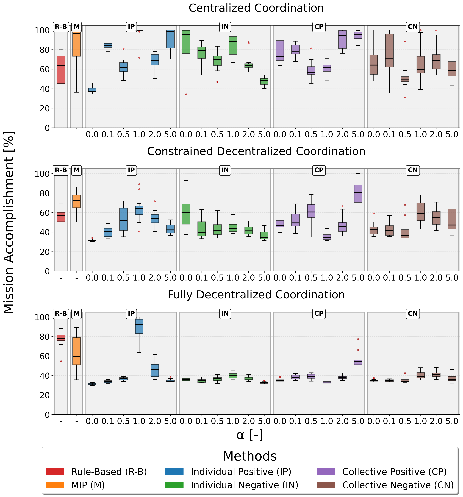
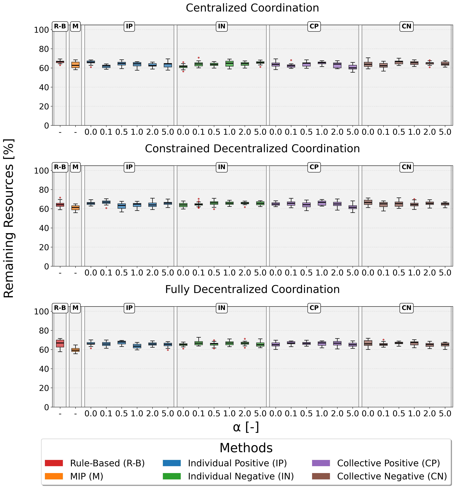
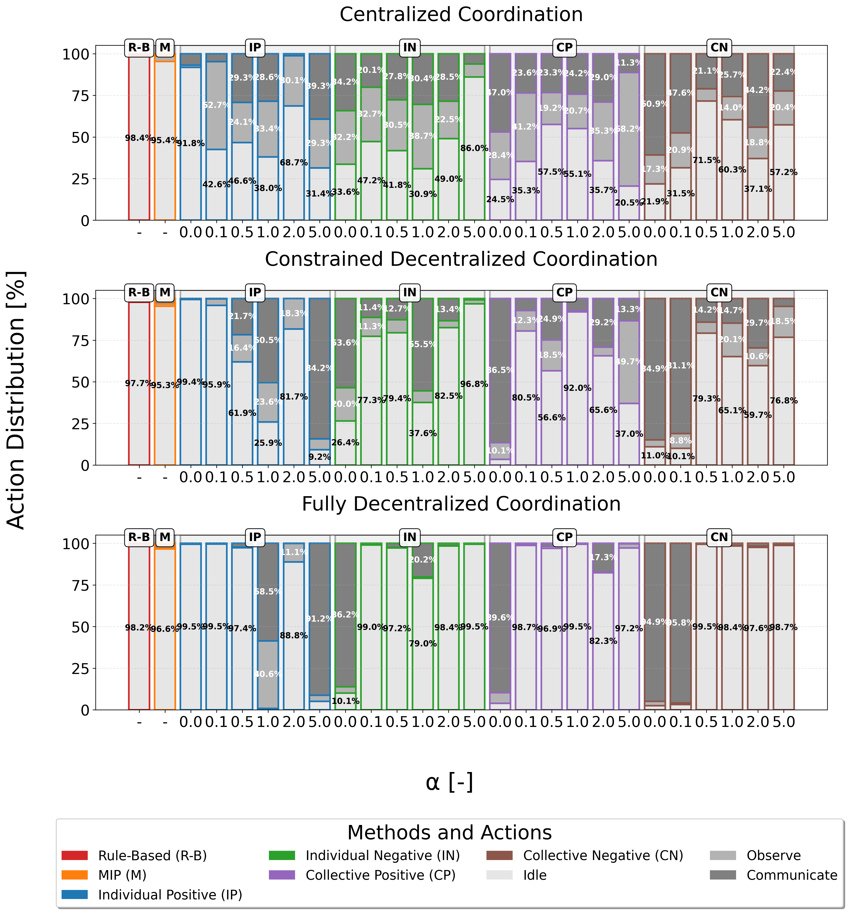

Abstract
Traditional centralized operations struggle to scale with the complexity of large satellite constellations. This work presents a decentralized multi-agent deep reinforcement learning approach for operating an autonomous Space Situational Awareness constellation of 20 satellites. Four reward functions, with different reward scaling factors, are evaluated using a mission goal term across three coordination topologies. Developed strategies obtain similar or even outperform centralized rule-based and Mixed Integer Programming benchmarks in tested scenarios, and generalize across coordination topologies despite being trained in fully decentralized environments. Finally, space hardware inference confirms feasibility in modern systems, with execution times in the microsecond range.
Methodology
Multi-Agent Reinforcement Learning
AUTOPS-RL uses distributed Proximal Policy Optimization (PPO) to train coordination policies for multiple observer satellites. Each satellite acts as an independent agent making real-time decisions about which targets to observe, considering battery constraints, communication limitations, and mission objectives.
Network Architectures
- Centralized: Full information sharing with global coordination
- Constrained Decentralized: Limited communication range with local coordination
- Fully Decentralized: No communication, independent decision-making
Reward Function Design
Four reward cases evaluated:
- Case 1: Positive rewards for observed targets (individual)
- Case 2: Negative rewards for unobserved targets (individual)
- Case 3: Individual rewards + global bonus for observed targets (collective)
- Case 4: Individual rewards + global bonus for unobserved targets (collective)
Sensitivity Analysis
Comprehensive evaluation across 6 scaling factors (α = 0.0, 0.01, 0.05, 1.0, 2.0, 5.0) to analyze the impact of reward scaling on policy performance and coordination behavior.
Constellation Configuration Example
Space Situational Awareness Scenario: 20 observer satellites arranged in a Walker Delta constellation coordinate to track and monitor 100 target objects in various orbital configurations. Each observer satellite must autonomously decide which targets to observe while managing battery constraints and communication limitations.
Results
Mission Accomplishment
Comparison of mission accomplishment rates across RL policies (with different scaling factors), rule-based, and MIP baseline methods. Results show the effectiveness of learned coordination strategies compared to traditional approaches.
Resource Utilization
Analysis of resource utilization efficiency, including battery consumption and observation coverage. RL policies demonstrate efficient resource management while maintaining high mission performance.
Action Distribution Analysis
Detailed breakdown of action distributions across different policies, revealing coordination patterns and decision-making strategies learned by the RL agents compared to rule-based and optimization-based approaches.
Key Findings
Performance
60-70%
Remaining resources maintained across all coordination topologies, demonstrating efficient resource management while maintaining high mission performance.
Inference Speed
~4μs
Average inference time per decision on NVIDIA Jetson Orin Nano (7W power mode), confirming real-time feasibility for onboard deployment.
Generalization
Cross-Topology
Policies trained in fully decentralized environments generalize effectively to centralized and constrained decentralized topologies, demonstrating robust coordination strategies.
Hardware Validation: The trained policies were evaluated on an NVIDIA Jetson Orin Nano operating in 7W power mode, a configuration specifically designed for resource-constrained applications. This computing platform has been identified as a promising candidate for AI-enabled nanosatellite missions due to its balance of size, computational capability, and power efficiency. The empirical results demonstrate that the developed neural network policies can be executed in real-time on low-power onboard systems without compromising mission-critical response times.
Reward Function Insights: Negative reward functions maintain more balanced operational modes even under communication limitations, with observation activities remaining above 20% in constrained scenarios. This aligns with research suggesting that shifting reward functions towards values equal to or lower than zero leads to faster convergence and better optimal decisions.
Training Performance
Training curves demonstrating learning progress across all reward cases and scaling factors. The plots show convergence behavior, sample efficiency, and final performance levels achieved by the distributed PPO training process. Negative reward functions demonstrate superior stability and robustness in resource-constrained, mission-critical environments.
Paper
EUCASS 2025 - 11th European Conference for Aeronautics and Aerospace Sciences (EUCASS)
Presentation
EUCASS 2025 - Conference Presentation Slides
Download the conference presentation slides from EUCASS 2025. The presentation covers the methodology, experimental setup, results, and key findings of the AUTOPS-RL framework for autonomous satellite coordination.
BibTeX
@inproceedings{autops-rl2025,
title={Autonomous Decision-Making for Large Satellite Constellations: a Multi-Agent Reinforcement Learning Approach to Space Situational Awareness in Partially Observable Dynamic Environments},
author={Juan Oliver, Clemente J. and Messina, Vincenzo and Dolan, Sydney and Golkar, Alessandro},
booktitle={11th European Conference for Aeronautics and Aerospace Sciences (EUCASS)},
year={2025},
url={https://gitlab.lrz.de/sps/autops/autops-rl},
}